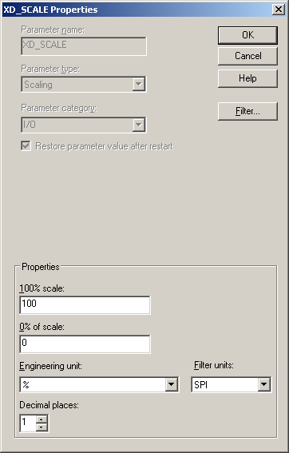
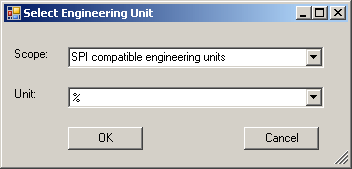

SPI: setting up DeltaV software
SPI and DeltaV software each support a set of engineering units. They do not support the same set. If you intend to retrieve instrument configurations back in to SPI, you must use SPI compatible engineering units. To make SPI compatible engineering units available to DeltaV software (including the Excel add-in), you must import SPI compatible units into the DeltaV database. If you intend to publish the configuration and retrieve it back into SPI you must use SPI compatible units. Any incompatible units are changed to % when published from the Excel add-in.
The Intergraph website has fhx files from which you can import SPI compatible engineering units:
http://www.intergraph.com/products/ppm/smartplant/instrumentation/Download_DeltaV_Definition_Files.asp
The fhx files have a naming convention:
DeltaVCustomEUFromSPI200x.n_YYYY_MM_DD.fhx
Where
x is the year of release,
n is the release within the year,
and YYYY_MM_DD are the year, month, and day the file was created.
The file contains two types of engineering units:
SPI engineering units not currently supported by DeltaV software — These are imported as custom engineering units and are SPI compatible.
Existing DeltaV engineering units that must be processed to become compatible with SPI — These are engineering units that both SPI and DeltaV software support. These remain standard engineering units but are SPI compatible after the import.
After you import the fhx file both types of engineering units are available as SPI compatible in DeltaV software.
To ensure that the SPI compatible engineering units are available, perform the following steps:
Download the fhx file for your version of software from the Intergraph website.
Note:Import this file as is. Do not migrate this file. If you migrate this file you remove a number of SPI compatible engineering units.
From DeltaV Explorer, select .
In the Import dialog, browse to the fhx file you downloaded and click Import.
In the Exploring DeltaV popup that appears, click Yes to All to update the engineering units in the database.
You must select Yes to All to import the SPI compatible engineering units.
Click Yes on the confirmation dialog that appears.
You may see a warning about no schema. You can ignore this message. The engineering units are imported into the DeltaV database.
The SPI compatible engineering units are now available in DeltaV Explorer and Control Studio. Importing the engineering units adds the Filter units field to scale parameter Properties dialogs.

If you have already generated the libraries (this occurs automatically the first time you open Data Manager in the Excel add-in) you must regenerate the engineering units library after you import the SPI compatible engineering units fhx file:
Select .
On the Library Manager dialog, deselect everything except Engineering Units (you cannot deselect Setup).
Click Regenerate.
Click Close when the regeneration is complete.
To use the SPI compatible engineering units in the Excel add-in:
Retrieve an SPI instrumentation xml file into the Excel workbook (use from SPI).
Save the workbook to the DeltaV database.
Reload the controller from the DeltaV database into Excel.
You must import the SPI engineering units into the DeltaV database before you retrieve any SPI controller configuration files.
You can now use SPI engineering units in the Excel add-in and in DeltaV configuration. When you right-click an engineering unit cell in Excel, the following dialog appears.

In the Scope field you can select either SPI compatible engineering units or All engineering units. The choices in the Unit field depend on the selection in the Scope field.